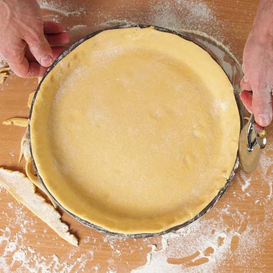
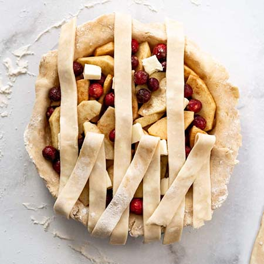
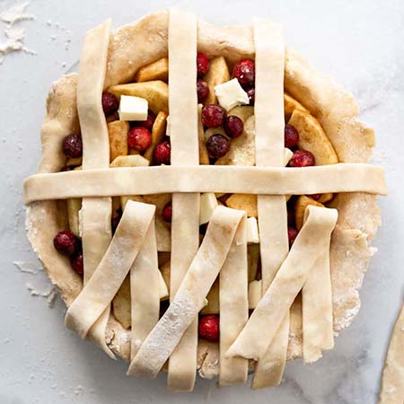
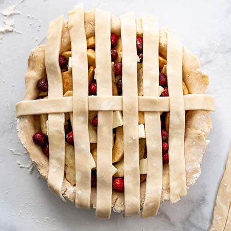
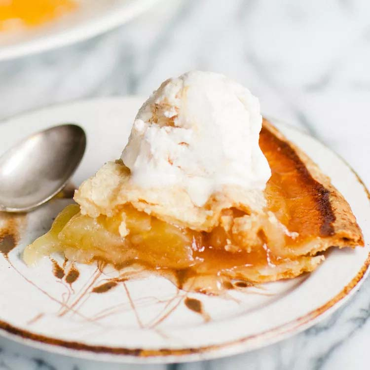

Classic pie with apple cinnamon filling and a buttery crust
Apple Pie
Classic pie with apple cinnamon filling and a buttery crust
Total Time: 1hr 30 min
Cook time: 1 hr
Prep time: 30 min
Yield: 1 9-inch pie
Servings: 8
Ingredients
small Granny Smith apples, or as needed
cup unsalted butter
tablespoons all-purpose flour
cup white sugar
cup packed brown sugar
cup water
(9 inch) double-crust pie pastry, thawed
Directions
Peel and core apples, then thinly slice. Set aside.
Preheat the oven to 425 °F (220 °C).
Melt butter in a saucepan over medium heat. Add flour and stir to form a paste; cook until fragrant, about 1 to 2 minutes. Add both sugars and water; bring to a boil. Reduce the heat to low and simmer for 3 to 5 minutes. Remove from the heat.
Press one pastry into the bottom and up the sides of a 9-inch pie pan. Roll out remaining pastry so it will overhang the pie by about ½ inch. Cut pastry into eight 1-inch strips.

Place sliced apples into the bottom crust, forming a slight mound. Lay four pastry strips vertically and evenly spaced over apples, using longer strips in the center and shorter strips at the edges.
Make a lattice crust: Fold the first and third strips all the way back so they're almost falling off the pie. Lay one of the unused strips perpendicularly over the second and fourth strips, then unfold the first and third strips back into their original position.



Fold the second and fourth vertical strips back. Lay one of the three unused strips perpendicularly over top. Unfold the second and fourth strips back into their original position.
Repeat Steps 6 and 7 to weave in the last two strips of pastry. Fold and trim excess dough at the edges as necessary, and pinch to secure.
Slowly and gently pour sugar-butter mixture over lattice crust, making sure it seeps over sliced apples. Brush some onto lattice, but make sure it doesn't run off the sides.
Bake in the preheated oven for 15 minutes. Reduce the temperature to 350 °F (175 °C) and continue baking until apples are soft, 35 to 45 minutes.
Serve once cool enough to eat. Add vanilla ice cream if desired.

Storage
To Store: Cover the cooled pie tightly with foil and store at room temperature for up to two days or in the refrigerator for up to four days.
To Freeze: Wrap the pie in two layers of plastic wrap and one layer of aluminum foil. Place it in an airtight container or cover in another layer of foil. Squeeze out the excess air and freeze for up to three months.